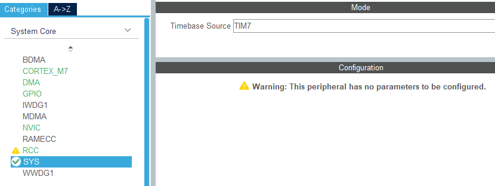
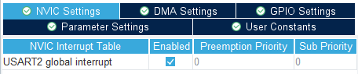
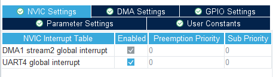
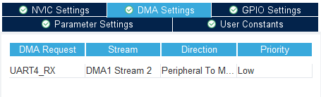
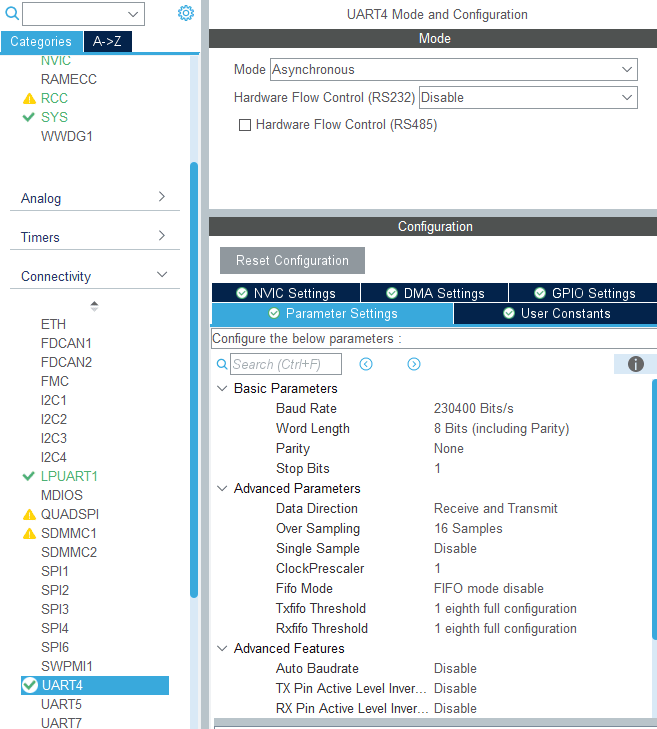
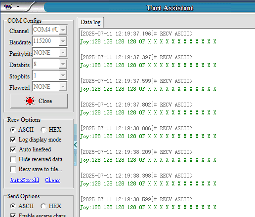

Чтение данных лидара
- Цель эксперимента
- Подключение оборудования
- Анализ основного кода
- Компиляция, загрузка и прошивка firmware
- Результаты эксперимента
1. Цель эксперимента
Используя интерфейс лидара на плате управления STM32, считать данные с лидара T-MiniPlus и разобрать пакеты данных радара.
2. Подключение оборудования
Как показано на рисунке ниже, плата управления STM32 имеет встроенный интерфейс лидара T-MiniPlus. Необходимо подключить кабель лидара T-MiniPlus к плате управления STM32 и к самому лидару.
Подключите USB-кабель Type-C к USB-порту компьютера и к порту USB Connect на плате управления STM32.

Разъём кабеля лидара T-MiniPlus имеет защиту от неправильного подключения. Просто совместите разъём и вставьте его в левый интерфейс лидара.
3. Анализ основного кода
Путь к исходному коду программы:
Board_Samples/STM32_Samples/Read_Lidar
Поскольку лидар T-MiniPlus использует последовательную связь (UART), для связи выбран последовательный порт 4. Вывод TX порта 4 соответствует PC10, вывод RX — PC11. Скорость передачи установлена на 230400 бод, длина данных — 8 бит, стоп-бит — 1, без бита паритета. Включены канал приёма DMA и прерывание последовательного порта.





void MX_UART4_Init(void)
{
huart4.Instance = UART4;
huart4.Init.BaudRate = 230400;
huart4.Init.WordLength = UART_WORDLENGTH_8B;
huart4.Init.StopBits = UART_STOPBITS_1;
huart4.Init.Parity = UART_PARITY_NONE;
huart4.Init.Mode = UART_MODE_TX_RX;
huart4.Init.HwFlowCtl = UART_HWCONTROL_NONE;
huart4.Init.OverSampling = UART_OVERSAMPLING_16;
huart4.Init.OneBitSampling = UART_ONE_BIT_SAMPLE_DISABLE;
huart4.Init.ClockPrescaler = UART_PRESCALER_DIV1;
huart4.AdvancedInit.AdvFeatureInit = UART_ADVFEATURE_NO_INIT;
if (HAL_UART_Init(&huart4) != HAL_OK)
{
Error_Handler();
}
if (HAL_UARTEx_SetTxFifoThreshold(&huart4, UART_TXFIFO_THRESHOLD_1_8) !=
HAL_OK)
{

Error_Handler();
}
if (HAL_UARTEx_SetRxFifoThreshold(&huart4, UART_RXFIFO_THRESHOLD_1_8) !=
HAL_OK)
{
Error_Handler();
}
if (HAL_UARTEx_DisableFifoMode(&huart4) != HAL_OK)
{
Error_Handler();
}
}
Инициализация радара (лидара). После успешной инициализации можно запустить режим сканирования и включить приём данных по DMA на последовательном порту 4. В этот момент индикатор лидара переходит из состояния "горит непрерывно" в режим "мигает".
void Lidar_Init(void)
{
HAL_UART_Receive_DMA(&huart4, dma_buffer, UART_DMA_BUFFER_SIZE);
Lidar_Stop();
HAL_Delay(200);
Lidar_Start();
}
Приём сообщений, отправляемых лидаром T-MiniPlus.
void Lidar_Recv_Data(uint8_t rxtemp)
{
static uint8_t step = 0;
static uint16_t si_len = 0;
static uint8_t si_index = 0;
switch (step)
{
case 0:
if (rxtemp == Lidar_HeaderLSB)
{
step = 1;
lidar_recv_buf[0] = Lidar_HeaderLSB;
}
break;
case 1:
if (rxtemp == Lidar_HeaderMSB)
{
step = 2;
lidar_recv_buf[1] = Lidar_HeaderMSB;
}
break;
case 2:
lidar_recv_buf[step] = rxtemp;
step++;
break; // CT information
case 3:
lidar_recv_buf[step] = rxtemp;
step++;
si_len = rxtemp * 3; // Number of S
// When determining whether the data length will be greater than the
cache here
if (si_len + 10 >= RX_BUF_MAX)
{
si_len = 0;
step = 0;
memset(lidar_recv_buf, 0, sizeof(lidar_recv_buf));
}
break;
case 4:
lidar_recv_buf[step] = rxtemp;
step++;
break; // Starting angle is 8 digits lower
case 5:
lidar_recv_buf[step] = rxtemp;
step++;
break; // Starting angle height of 8 digits
case 6:
lidar_recv_buf[step] = rxtemp;
step++;
break; // end angle is 8 digits lower
case 7:
lidar_recv_buf[step] = rxtemp;
step++;
break; // End angle height of 8 digits
case 8:
lidar_recv_buf[step] = rxtemp;
step++;
break; // Low 8 digits of verification code
case 9:
lidar_recv_buf[step] = rxtemp;
step++;
break; // High 8 digits of verification code
case 10:
{
lidar_recv_buf[step + si_index] = rxtemp;
si_index++;
if (si_index >= si_len)
{
Lidar_Parse_Data();
si_index = 0;
si_len = 0;
step = 0; // Receive a packet of data
memset(lidar_recv_buf, 0, sizeof(lidar_recv_buf)); // clear
}
break;
}
}
}
Лидар T-MiniPlus разбирает пакет данных облака точек на основе принятых данных протокола.
static void Lidar_Parse_Data(void)
{
Lidar_Data_t *timiplus_msg_p = &lidar_data;
uint16_t llen = lidar_recv_buf[3] * 3; // length
uint8_t si_step = 0;
// Small end to large end
timiplus_msg_p->PH = lidar_recv_buf[1] << 8 | lidar_recv_buf[0];
timiplus_msg_p->CT = lidar_recv_buf[2];
timiplus_msg_p->LSN = lidar_recv_buf[3];
timiplus_msg_p->FSA = lidar_recv_buf[5] << 8 | lidar_recv_buf[4];
timiplus_msg_p->LSA = lidar_recv_buf[7] << 8 | lidar_recv_buf[6];
timiplus_msg_p->CS = lidar_recv_buf[9] << 8 | lidar_recv_buf[8];
for (uint16_t i = 0; i < llen; i += 3)
{
timiplus_msg_p->SI[si_step].Intensity = lidar_recv_buf[10 + i] & 0x00FF;
// Light intensity
timiplus_msg_p->SI[si_step++].SI_dis = lidar_recv_buf[10 + i + 2] << 8 |
lidar_recv_buf[10 + i + 1]; // Effective value of distance
}
// XOR processing
if (Lidar_Checkout(timiplus_msg_p) != 0) // Verification code error
{
memset(timiplus_msg_p, 0, sizeof(lidar_data));
return;
}
lidar_new_data = 1; // One packet of data is correct
}
Извлечение данных о соответствующих углах на основе пакета данных облака точек.
static void Lidar_Update_Points(Lidar_Data_t *msg, Lidar_Point_t* output)
{
static uint16_t last_index = 0;
double start_angle, interval_angle;
int start_distance;
uint16_t start_index, index;
start_angle = Lidar_Get_Start_Stop_Angle(msg->FSA); //Starting angle
start_distance = Lidar_Get_Distance(msg->SI[0].SI_dis);
interval_angle = LIDAR_INTERVAL_POINTS;
start_index = (uint16_t)(start_angle / interval_angle);
// start_index = last_index + 1;
start_index = start_index % LIDAR_DATA_LEN;
if (msg->LSN <= 1)
{
last_index = start_index;
output[0].dis = start_distance;
output[0].angle = start_angle;
for (int i = 0; i < start_index; i++)
{
output[i].dis = start_distance;
output[i].angle = start_angle;
Lidar_Ranges[i] = output[i].dis;
}
// printf("start angle:%d, %f\n", start_index, start_angle);
return;
}
if (start_index > (last_index+1))
{
uint16_t offset_count = start_index-last_index-1;
for (int i = 0; i < offset_count; i++)
{
output[last_index+1+i].dis = start_distance;
output[last_index+1+i].angle = start_angle;
Lidar_Ranges[last_index+1+i] = output[last_index+1+i].dis;
}
// printf("index error:%d, %d\n", last_index, start_index);
}
output[start_index].dis = start_distance;
output[start_index].angle = start_angle;
Lidar_Ranges[start_index] = output[start_index].dis;
for (uint8_t i = 1; i < msg->LSN; i++)
{
index = (start_index + i) % LIDAR_DATA_LEN;
output[index].dis = Lidar_Get_Distance(msg->SI[i].SI_dis);
output[index].angle = start_angle + interval_angle * i;
Lidar_Ranges[index] = output[index].dis;
}
last_index = index;
}
Обработка данных сообщений, отправляемых радаром, в цикле.
void Lidar_Handle(void)
{
dma_tail = UART_DMA_BUFFER_SIZE - __HAL_DMA_GET_COUNTER((&huart4)->hdmarx);
rx_count = 0;
while (dma_head != dma_tail)
{
Lidar_Recv_Data(dma_buffer[dma_head]);
dma_head = (dma_head + 1) % UART_DMA_BUFFER_SIZE;
if (lidar_new_data) break;
rx_count++;
if (rx_count > RX_BUF_MAX) break;
}
if (lidar_new_data)
{
Lidar_Update_Data();
lidar_new_data = 0;
}
}
Расстояние, обнаруженное лидаром T-MiniPlus в точке 0 (направление указателя), печатается каждые 200 миллисекунд в миллиметрах.
void App_Handle(void)
{
uint32_t lastTick = HAL_GetTick();
printf("start APP Handle\n");
Lidar_Init();
while (1)
{
Lidar_Handle();
if (HAL_GetTick() - lastTick >= 200)
{
lastTick = HAL_GetTick();
App_Led_Mcu_Flash_200ms();
printf("Lidar range:%ldmm\n", Lidar_Ranges[0]);
}
}
}
4. Компиляция, загрузка и прошивка firmware
Выберите проект для компиляции в окне управления файлами STM32CUBEIDE и нажмите кнопку компиляции на панели инструментов, чтобы начать компиляцию.
Если ошибок и предупреждений нет, компиляция завершена успешно.
Нажмите и удерживайте кнопку BOOT0, затем нажмите кнопку RESET для перезагрузки, отпустите кнопку BOOT0, чтобы войти в режим прошивки через последовательный порт. Затем используйте утилиту прошивки через последовательный порт, чтобы записать firmware на плату.
Если у вас есть ST-Link или J-Link, вы также можете прошить firmware в один клик прямо из STM32CUBEIDE — это более удобно и быстро.
5. Результаты эксперимента
Светодиод MCU_LED мигает каждые 200 миллисекунд.
Откройте программу для работы с последовательным портом и установите скорость передачи 115200. Вы увидите, что расстояние, обнаруженное лидаром T-MiniPlus на 0 градусах (направление указателя), печатается каждые 200 миллисекунд в миллиметрах.
